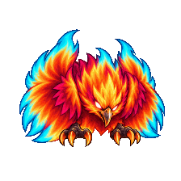Phoenix spiritCOOKEDWinds up a spell, throws a firestorm, then celebrates the damage.udyrisCOOKED Actual chat sizeSee the eight acting poses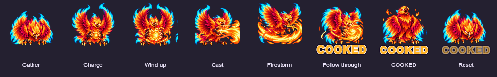
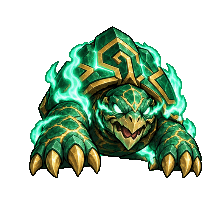Turtle spiritSHATTERBraces, forms a jade shield, takes a hit, then stares at the broken piece.udyrisSHATTER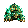 Actual chat sizeSee the eight acting poses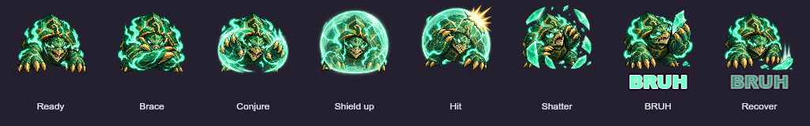
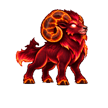Ram spiritGOTCHACrouches, charges and headbutts a target, then points at the viewer.udyrisGOTCHA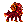 Actual chat sizeSee the eight acting poses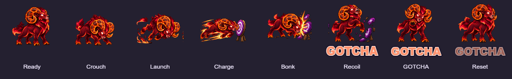
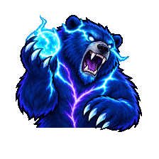Bear spiritITHREWWinds up a magic throw, drops it at his feet and facepalms.udyrisITHREW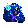 Actual chat sizeSee the eight acting poses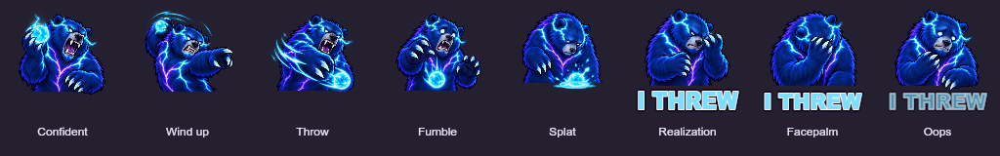
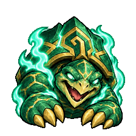Turtle spiritGGPulls up a GG sign, waves it proudly and gives a thumbs-up.udyrisGG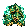 Actual chat sizeSee the eight acting poses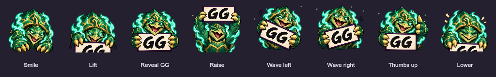
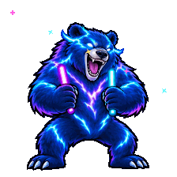Bear spiritRAVEPumps glowsticks, lifts knees, leaps and lands in a disco pose.udyrisRAVE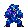 Actual chat sizeSee the eight acting poses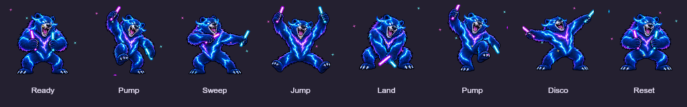
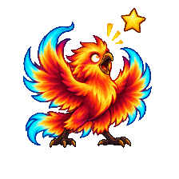Phoenix spiritCLUTCHPanics, dives for a falling star, catches it and proudly shows it off.udyrisCLUTCH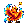 Actual chat sizeSee the eight acting poses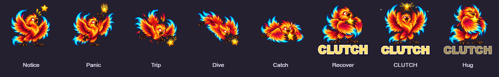